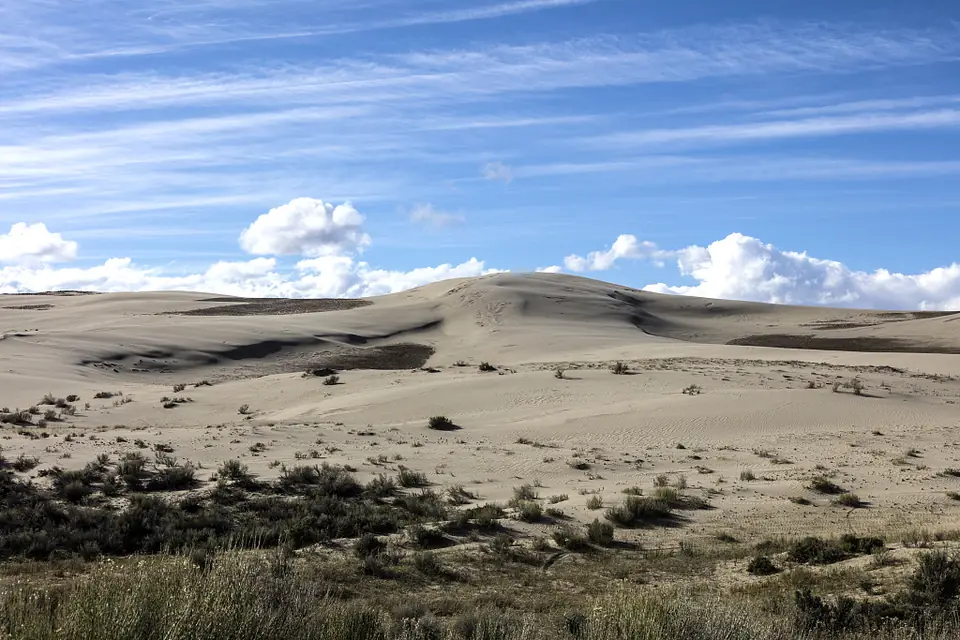

Stacked Album Cover Carousel
Browse a stack of covers linked to the active playlist. Add local music, organize favorites, and control volume, seeking, and playback order.

Swipe the covers or use the arrow keys
Playlist
Music example on YouTube
Kimiko Ishizaka · Bach, BWV 846